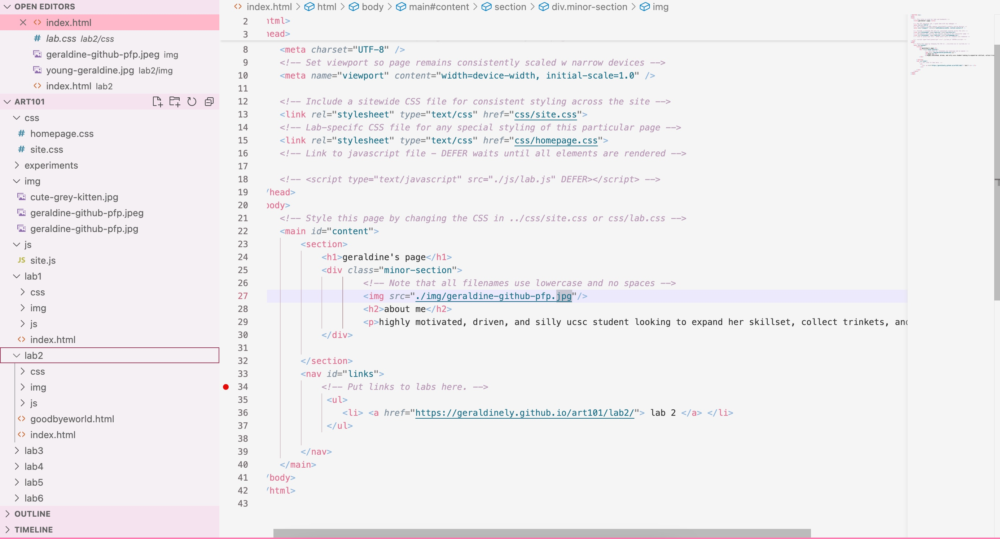

lab 3 - file structures
the purpose of lab 3 - file structures was to attempt creating a file structure on my computer and add index.html files.
challenges
it is still challenging for me to continue to understand how to utilize css tools and understand each tags function and it's order. even this page i still think is a bit ugly, because i'm unsure of the css tools. i think other than that, creating index.html files within the folder was relatively digestible for me.
results
this is the index.html file that i made, the page you're looking at right now!
here is the file structure.

this is my project file structure. i installed the file structure template professor modes provided.
this is my index html file.
this is my html source code!